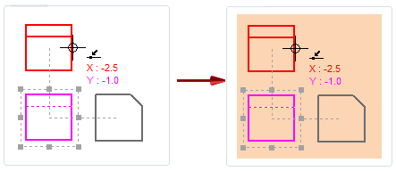
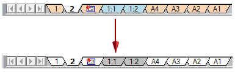
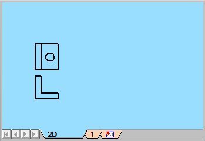
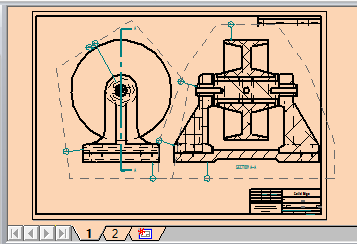

Change the colors of sheets and sheet tabs
You can use the Colors tab (Solid Edge Options dialog box) to change the color scheme of sheets, change the color of sheet tabs, or both.
Change the color scheme of drawing sheets
-
On the Colors tab (Solid Edge Options dialog box), from the Drawing Display list, choose the sheet type for which you want to change the color scheme:
-
2D Model—Changes the color scheme for the 2D Model sheet.
-
Sheet—Changes the color scheme for all other sheets.
-
-
From the Sheet list, choose a different color.
This changes the Color Scheme from Solid Edge Default to Custom, and the Preview pane updates to show the new background color.
Example:
-
(Optional) Change the Highlight color, the Selected element color, and the Disabled element color using the corresponding lists.
The Preview pane shows how the colors look on the sheet background.
-
Click Apply or OK to update the drawing sheets.
You can reset the colors to the default by selecting Solid Edge Default from the Color Scheme list.
Change the color of sheet tabs
Color scheme changes do not affect sheet tab colors. To change the default color of sheet tab groups displayed in the sheet tab tray:
-
On the Colors tab (Solid Edge Options dialog box), in the Sheet Tabs section, choose a new color swatch for the following:
-
Sheet tab 1—Changes the sheet tab color of the 2D Model tab, the background sheet tabs, and of alternating groups of working sheet tabs.
The default color of Sheet tab 1 is Light Aqua.
-
Sheet Tab 2—Specifies the sheet tab color of the primary working sheet tabs, and for alternating groups of working sheet tabs.
The default color of Sheet tab 2 is Light Orange.
-
-
Click Apply or OK to update the tab color in the sheet tab tray.
Working sheets (1, 2...), automatically inserted table sheets (1:1, 1:2...), and background sheets (A4, A3, A2, A1) are displayed in the sheet tab tray.
The default sheet tab colors are changed from Light Orange and Light Aqua to White and Light Gray.

You can combine the Drawing Display options plus the Sheet tab 1 and Sheet Tab 2 options to coordinate the color of the sheet background with the color of the sheet tab.
-
You can assign Sky Blue to the 2D Model sheet background and to its sheet tab, as well as to alternating groups of sheet tabs that are inserted into the document, by selecting the following:
-
Drawing Display=2D Model
-
Sheet=Sky Blue
-
Sheet tab 1=Sky Blue

-
-
You can assign Light Orange to the working sheet and to its sheet tab, as well as to alternating groups of sheet tabs that are inserted into the document, by selecting the following:
-
Drawing Display=Sheet
-
Sheet=Light Orange
-
Sheet tab 2=Light Orange

-